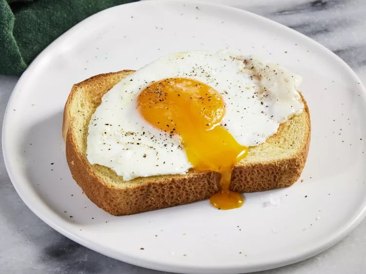

Basted Eggs recipe

Description
Have you ever made a basted egg? If you haven't, it's time to remedy that ASAP! Basted eggs are similar to poached eggs, but they're much easier to cook. You'll come back to this simple basted egg recipe time and time again.
Ingredients:
- 1 ½ tablespoons salted butter
- 2 large eggs
- 1 tablespoon water
- ⅛ teaspoon freshly ground black pepper
- 1 pinch flaky sea salt, or to taste
Steps:
- Melt butter in a medium nonstick skillet over medium heat. Carefully crack eggs into the skillet and let cook until whites have almost set, about 1 minute. Add water, cover skillet with a lid or cookie sheet, reduce heat to medium-low, and let cook until whites have set, yolks are still runny, and some of white has set over yolk, 1 to 2 more minutes. Remove lid and transfer eggs to a serving plate. Garnish with pepper and flaky salt, if desired. Serve immediately.